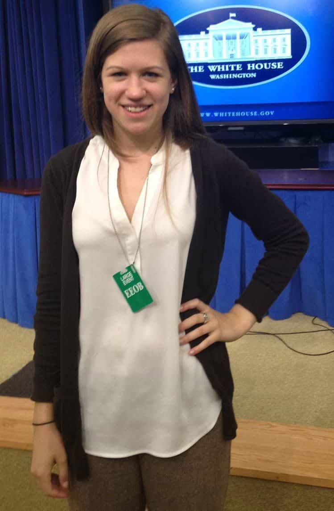
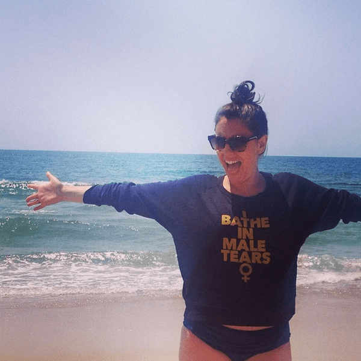

< < < Back
Why Haven’t The People Who Pushed Rolling Stone’s UVA Rape Hoax Story Been Fired? – Return Of Kings
This past weekend, Rolling Stone announced that the Columbia University Graduate School of Journalism had completed their review of Sabrina Rubin Erdely’s article “A Rape on Campus,” her long-discredited report on a purported gang rape that happened at the Phi Kappa Psi frat house at the University of Virginia. To no one’s surprise, the review ruled that the story was completely false:
This report was painful reading, to me personally and to all of us at Rolling Stone. It is also, in its own way, a fascinating document — a piece of journalism, as Coll describes it, about a failure of journalism. With its publication, we are officially retracting ‘A Rape on Campus.’ We are also committing ourselves to a series of recommendations about journalistic practices that are spelled out in the report. We would like to apologize to our readers and to all of those who were damaged by our story and the ensuing fallout, including members of the Phi Kappa Psi fraternity and UVA administrators and students. Sexual assault is a serious problem on college campuses, and it is important that rape victims feel comfortable stepping forward. It saddens us to think that their willingness to do so might be diminished by our failings.
While getting Rolling Stone to retract the story is a major victory, it’s absolutely insulting that Rubin Erdely, Will Dana and the other figures who pushed “A Rape on Campus” will get to keep their jobs. Fabulists of the past such as Stephen Glass, Jayson Blair, and Janet Cooke were blackballed out of the media over phony articles that did far less damage than Rubin Erdely’s.
Additionally, Jackie Coakley, the presumably mentally disturbed UVA student who made the false rape allegations, has yet to face any repercussions for her lies. Outside of a few reporters, such as the Daily Caller’s Chuck Ross, no one has even acknowledged that the UVA rape hoax originated in a bizarre catfishing plot Coakley cooked up in order to get the attention of a boy she’d been crushing on. Conservative journalist Charles Johnson was widely lambasted by SJWs for “outing” Coakley and investigating her last December.
With that in mind, here are some of the most significant names who pushed Rolling Stone’s rape hoax, and why they should be fired for whipping up fear, defaming innocent young men, and using the story to advance their political agendas.
1. Sabrina Rubin Erdely

The author of the Rolling Stone piece itself, Sabrina Rubin Erdely is a feminist with a documented hatred of masculinity, fraternity culture and “bros.” She admitted in interviews that she had been specifically shopping around for campus rape stories that fit her narrative, showing that she had a clear ideological motive in fabricating “A Rape on Campus.”
2. Emily Renda

Emily Renda is a feminist activist who serves as the subcommittee chair of the Virginia Governor’s Task Force on Combating Sexual Violence, giving her significant influence over government policy. Renda introduced Sabrina Rubin Erdely to Jackie Coakley so she could use the resulting hoax as a Reichstag fire incident to push for more extreme anti-male legislation. GotNews’ Charles Johnson recently revealed that Renda has a history of making up stories about being raped herself.
3. Teresa Sullivan
The president of UVA, Sullivan’s response to “A Rape on Campus” was to throw her own students under the bus. Even after Rolling Stone’s story was proven to be false, Sullivan forced UVA fraternities to agree to more restrictive rules on their activities. To this day, UVA frats are still on probation. Sullivan also had nothing to say when feminist vandals attacked the Phi Kappa Psi house, smashing windows with bricks and spray-painting obscenities on the walls.
4. Jessica Valenti

The founder of the once-influential feminist blog Feministing, Jessica Valenti has since graduated to penning columns for the left-wing British broadsheet The Guardian. Valenti had a nervous breakdown when the UVA rape story imploded in December, declaring “I BELIEVE WOMEN.”
When Rolling Stone finally retracted the article last weekend, she wrote a particularly delusional column claiming that the magazine was “blaming the victim [Coakley],” even though all every shred of available evidence suggests there was no rape and no victim.
5. Elizabeth Stoker Bruenig
A soi-disant Christian socialist, Elizabeth Stoker Bruenig is a staff columnist for The New Republic, the same magazine that employed notorious fabricator Stephen Glass. Stoker Bruenig falsely accused Return of Kings publisher Roosh Valizadeh of making a “rape threat” two months ago, and following Rolling Stone’s retraction, she posted a nearly illiterate article arguing that even though Rubin Erdely’s story was false, the supposed narrative of “rape culture” it was pushing was still true.
This list is hardly exhaustive: there are countless other figures in the media and government who seized upon the UVA rape hoax to push an anti-male agenda. It is absolutely astounding that not one of them has been blackballed, fired or even censured for their heinous actions. Only by documenting their lies and treachery can we ensure that these figures are discredited and shunned.
Read More: Is Rolling Stone Sensationalizing The UVA Rape Story For Profit?